Interiores de JoniaVivienda humilde
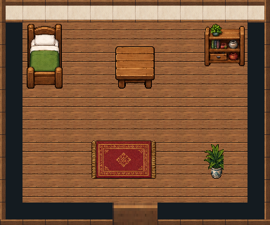
12 × 10 tiles · generica
Descargar mapa TiledVivienda familiar
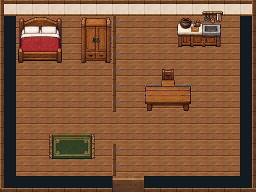
16 × 12 tiles · generica
Descargar mapa TiledVivienda con dos dormitorios
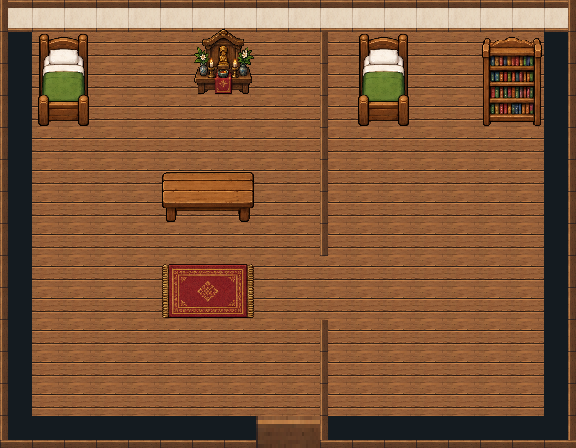
18 × 14 tiles · generica
Descargar mapa TiledCasa de agricultor
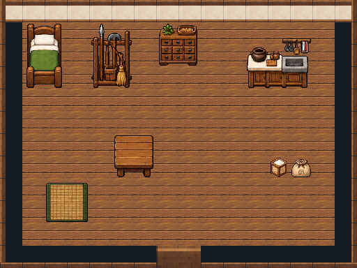
16 × 12 tiles · generica
Descargar mapa TiledCasa de pescador
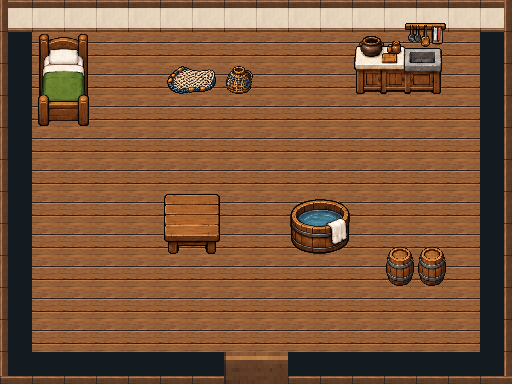
16 × 12 tiles · generica
Descargar mapa TiledTaller y vivienda
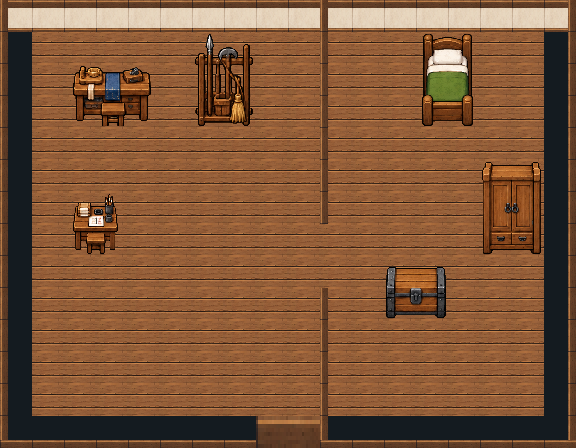
18 × 14 tiles · generica
Descargar mapa TiledCasa de herborista
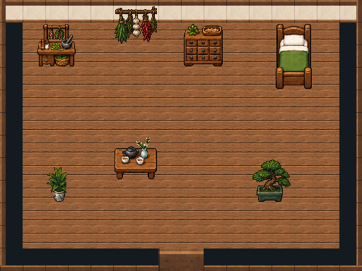
16 × 12 tiles · generica
Descargar mapa TiledHospedería de peregrinos
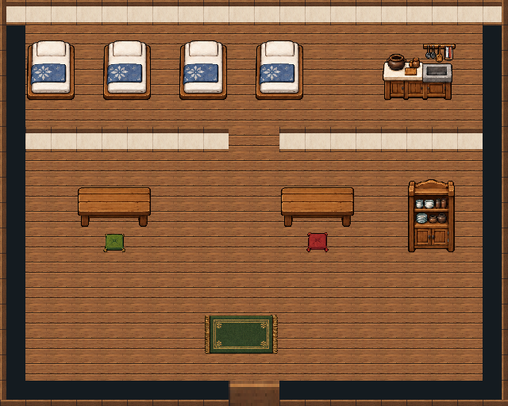
20 × 16 tiles · generica
Descargar mapa TiledResidencia acomodada
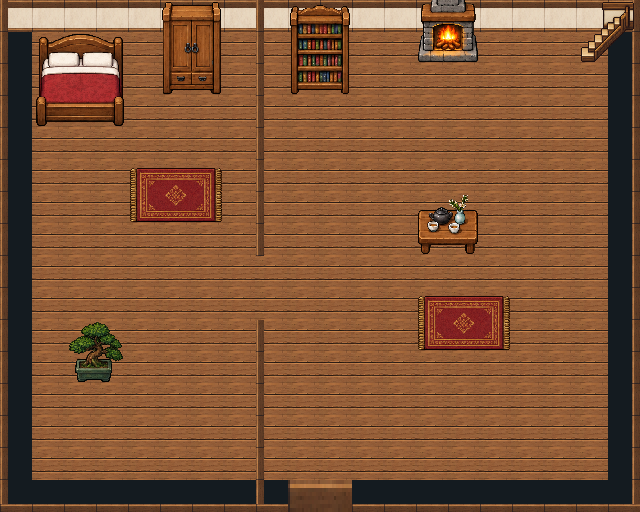
20 × 16 tiles · generica
Descargar mapa TiledAlojamiento de monjes y custodios
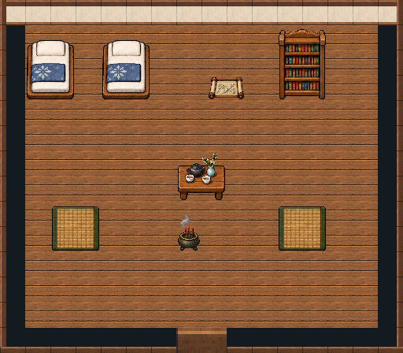
16 × 14 tiles · generica
Descargar mapa TiledTemplo de Koeshin
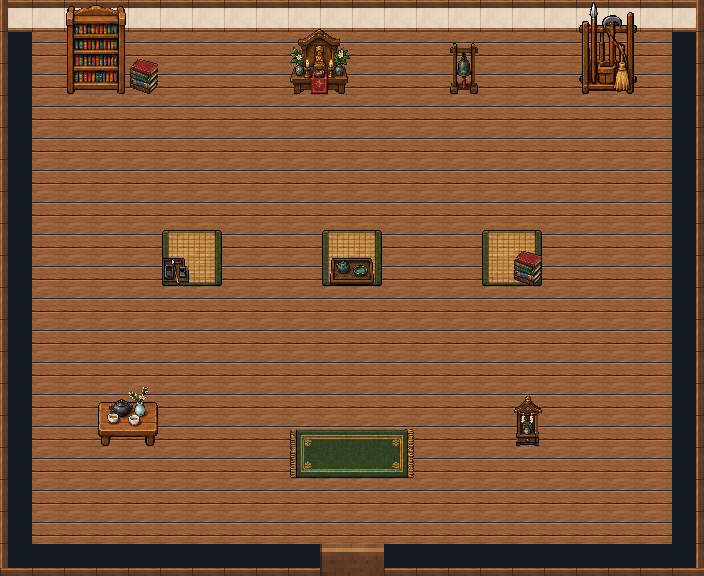
22 × 18 tiles · especial
Descargar mapa TiledTienda de Lhradi
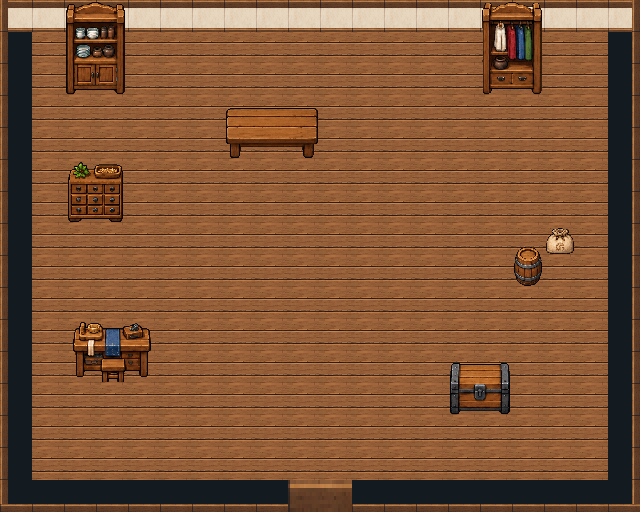
20 × 16 tiles · especial
Descargar mapa TiledTeatro de Lhradi · sala y escenario
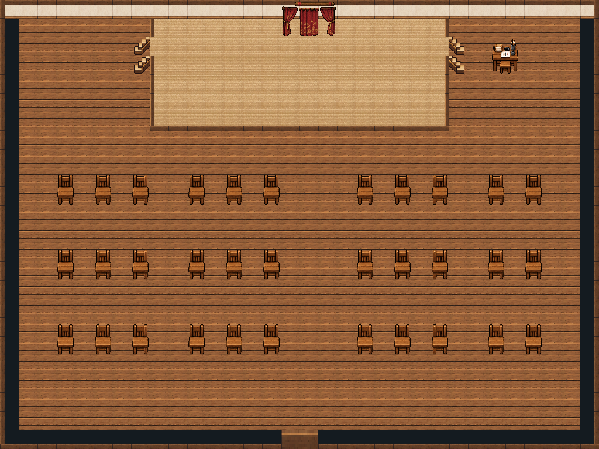
32 × 24 tiles · especial
Descargar mapa TiledTeatro · bambalinas
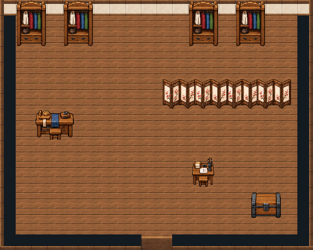
20 × 16 tiles · especial
Descargar mapa TiledTeatro · taller de máscaras oculto
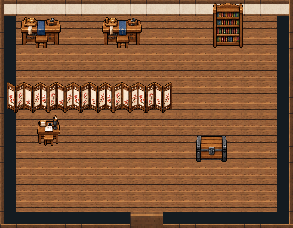
18 × 14 tiles · especial
Descargar mapa TiledSantuario del Placidium
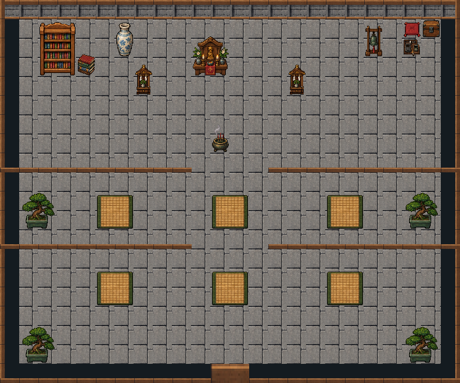
24 × 20 tiles · especial
Descargar mapa Tiled23 interiores integrados en el juego